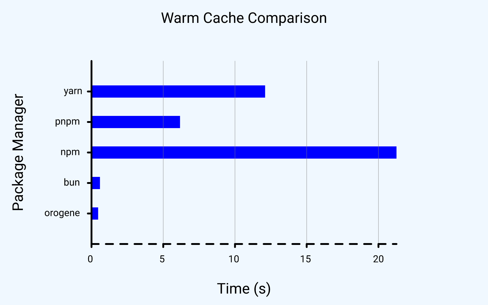

orogene
orogene
Makes
node_modules/happen. Fast. No fuss.


Orogene is a next-generation package manager for tools that use
node_modules/, such as bundlers, CLI tools, and Node.js-based
applications. It's fast, robust, and meant to be easily integrated into
your workflows such that you never have to worry about whether your
node_modules/ is up to date.
Note: Orogene is still under heavy development and may not yet be suitable for production use. It is missing some features that you might expect. Check the roadmap to see where we're headed and talk to us about what you want/need!.
Getting Started
You can install Orogene in various ways:
npx:
$ npx oro ping
NPM:
$ npm install -g oro
Cargo:
$ cargo install orogene
You can also find install scripts and archive downloads in the latest release.
Usage
For usage documentation, see the Orogene
docs, or run $ oro help.
If you just want to do something similar to $ npm install, you can run
$ oro apply in your project and go from there.
Performance
Orogene is very fast and uses significantly fewer resources than other package managers, in both memory and disk space. It's able to install some non-trivial projects in sub-second time:

For details and more benchmarks, see the benchmarks page.
Contributing
For information and help on how to contribute to Orogene, please see our contribution guide.
License
Orogene and all its sub-crates are licensed under the terms of the Apache 2.0 License.